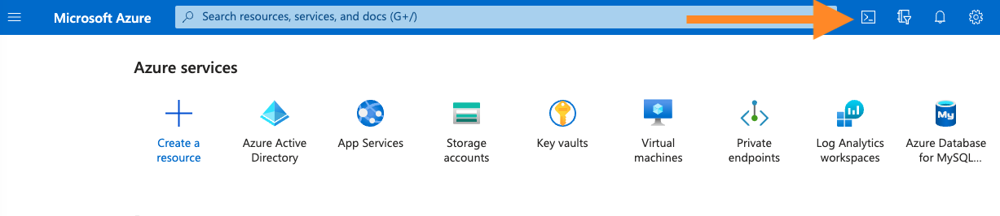

Long Lived Credentials
Explore Nymeria's long lived credentials for each cloud provider: Azure, AWS, and Google Cloud. Use each long lived credential to access resources in each cloud provider.
GitHub Action Credentials
From the GitHub Action called Long Lived Credentials, find the Azure tenant id, client id, and client secret values in the log output.
Stolen Credentials
Running the long-lived-credentials action will purposely expose an Azure client id and client secret in the GitHub Actions logs. The service principal permissions only have the Reader role on the nymeria-workshop resource group, which currently has no data to exfiltrate. However, these credentials are real and should be immediately deleted at the end of this to prevent exposure. You can skip this section if you are not comfortable with this risk.
-
In your GitHub repository, navigate to the Actions tab. Then, click on the I understand my workflows, go ahead and enable them. button.

-
Click on the Long Lived Credentials workflow. Then, click on the Run workflow button to start the workflow on the
mainbranch. -
Select the completed run of the Long Lived Credentials action to view the jobs.
-
Select the Apply Terraform job to view the steps.
-
Expand the Azure Login step to find the Azure tenant id, client id, and client secret values in the log output.
Console Output
-
These long-lived credentials are being used to authenticate to the Azure subscription. Observe the GitHub Action also shows a Note suggesting that we use a a federated credential to use OIDC based authentication.
Azure Service Principal Secret
Use the long-lived stolen client id and secret values to authenticate to the Azure tenant.
-
Browse to the Azure Portal open Cloud Shell again.

-
Start by running the
az ad signed-in-user showcommand. Observe you are signed into the Terminal under your personal account.Terminal Output
{ "@odata.context": "https://graph.microsoft.com/v1.0/$metadata#users/$entity", "businessPhones": [], "displayName": "Last Name, First Name, "givenName": "First Name", "id": "2e164a5a-1ebd-4f3e-ab84-18165db3e826", "jobTitle": "Hacker", "mail": "user@pumasecurity.io", "mobilePhone": null, "officeLocation": null, "preferredLanguage": null, "surname": "Last Name", "userPrincipalName": "user@pumasecurity.io" } -
Set the following environment variables to the stolen service principal credentials.
-
Use the stolen service principal credentials to authenticate to the Azure tenant and set the subscription.
-
The following command will list the resource groups that the service principal has access to:
nymeria-workshop. -
The following command will list the storage accounts in the
nymeria-workshopresource group. The output will confirm you are able to view the storage account containing the Nymeria Terraform state data. -
Now that we have proven the stolen credentials work, restart the Azure Cloud Shell to re-authenticate under your personal account.
-
Run the following command to delete the compromised service principal from your Azure subscription.
-
Go back to the GitHub repository and delete the run that contained the stolen credentials.
Credential Containment
Congratulations, you have successfully contained the stolen Azure credentials. Imagine doing this at scale across an enterprise each time a credential is accidentally leaked. Workload identity federation is powerful way to avoid the need for long lived credentials.
Nymeria Virtual Machine
Start hunting for long-lived AWS and Google cloud credentials on the Nymeria virtual machine. To do this, you will first need to connect to the Nymeria virtual machine over SSH. The private SSH key is stored in a Terraform output parameter called ssh_private_key from the 04_gh_action deployment. Using the Azure Cloud Shell, store this output in the ~/.ssh/nymeria.pem file.
-
Run the following commands in the Azure Cloud Shell to authenticate to the Terraform state storage account.
cd ~/clouddrive/nymeria/src/virtual_machines/01_azure_init/ ARM_RESOURCE_GROUP_NAME=$(terraform output --json | jq -r '.resource_group_name.value') ARM_STORAGE_ACCOUNT_NAME=$(terraform output --json | jq -r '.terraform_state_storage_account_name.value') cd ~/clouddrive/nymeria/src/virtual_machines/04_gh_action/ terraform init --backend-config="storage_account_name=$ARM_STORAGE_ACCOUNT_NAME" --backend-config="resource_group_name=$ARM_RESOURCE_GROUP_NAME" -
Read the
ssh_private_keyoutput parameter and store the private key in the~/clouddrive/.ssh/nymeria.pemfile. -
Use the
ssh_private_keyoutput parameter to connect to the Nymeria virtual machine over SSH.
AWS Access Key
Inspect the ~/.aws/ directory for configuration files containing long-lived AWS credentials.
-
List the files in the
~/.aws/directory. Do you see a file that might contain long-lived credentials? -
Use the
catcommand to view the long-lived AWS credentials. -
Set the
AWS_PROFILEenvironment variable tocross-cloudand use theaws sts get-caller-identitycommand to test the credentials validity. -
Review the environment variables pre-populated into the
~/.aws/get-resources.shscript. The values include the unique AWS S3 bucket with a Nymeria image. -
Source the environment variables in the
~/.aws/get-resources.shscript and verify the bucket name is populated in theAWS_S3_BUCKET_IDenvironment variable. -
Run the
aws s3 cpcommand to download the Nymeria image from the S3 bucket using the stolen long-lived credentials.
Google Cloud Service Account Key
Inspect the ~/.config/gcloud/ directory for configuration files containing long-lived Google Cloud credentials.
-
List the files in the
~/.config/gcloud/directory. Do you see a file that might contain long-lived credentials?Terminal Output
-
Use the
catcommand to view the long-lived GCP service account key. -
Review the environment variables pre-populated into the
~/.config/gcloud/get-resources.shscript. The values include the unique GCS bucket with a Nymeria image. -
Source the environment variables in the
~/.config/gcloud/get-resources.shscript and verify the bucket name is populated in theAWS_S3_BUCKET_IDenvironment variable. -
Run the
gcloud auth activate-service-accountcommand to configure thegcloudCLI to use the stolen long-lived credentials. -
Run the
gsutilcommand to download the Nymeria image from the GCS bucket using the stolen long-lived credentials.
Next Steps
Long-Lived Credential Exploitation
Congratulations, you have successfully stolen and used long-lived credentials to gain access to Azure, AWS, and GCP resources. These long-lived credentials will be destroyed using the Nymeria Teardown steps at the end of the workshop.
Next, move on to the Azure Federation section to learn how to use Azure Workload Identity Federation to avoid the need for long-lived client secrets.